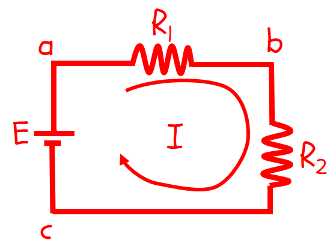
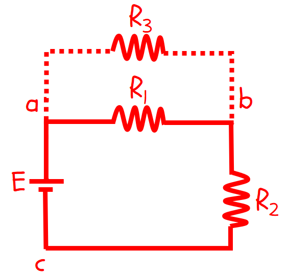
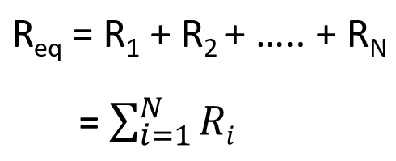
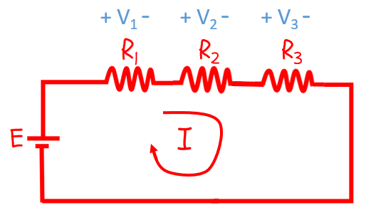
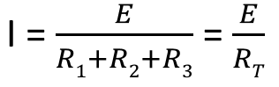
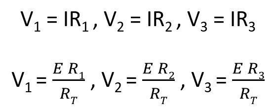
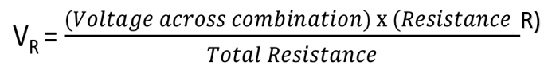

HOME BLOG EBOOKS ABOUT CONTACT SHOP
A series circuit is a circuit in which any number of components are connected one after the other, such that there is a single path for the flow of current. For example, in the circuit shown in the figure below, the Resistors R1 and R2 are in series, because they are connected at a common point b. Similarly, Resistor R2 and the Voltage source are also in series, with the common point c.

If there were any other components (that carry current) connected at any of these nodes (a, b or c), then this circuit wouldn’t be a series circuit anymore. For instance, if there had been a third resistor R3 connected between nodes a and b, as shown in the figure below, this is no longer a series circuit. Clearly there are 2 paths for the current to flow, through R1 & R3.

When dealing with a circuit containing large no of components, it’s a smart thing to simplify the circuit. This applies to resistors as well. A combination of resistors, be it series or parallel or otherwise can be replaced by a single resistance, called the equivalent or the effective resistance of the circuit. For a series combination of resistors, the equivalent resistance is found by simply adding the individual resistance values. Mathematically,

Now we know that resistors share a common current in a series connection, but they have different voltage drops across them depending on their resistance values. To find out the magnitude of these voltage drops we need to use the Voltage Divider Rule.

From Ohm’s law,

Then the Voltage drops across the resistors are,

In general, the Voltage drop across a Resistor R in series connection is given,
